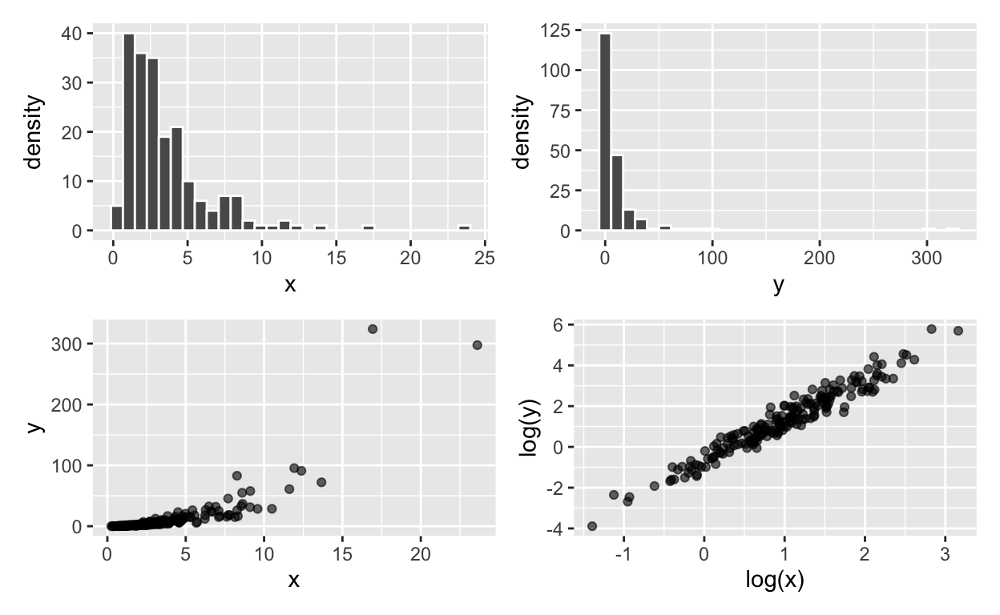

Introduction
On this web page you will find the homework, practical exercises and weekly quiz for Unit 2 of BIO144.
All other information for the course is on the OLAT course webpages, and web pages linked to from there: OLAT BIO144 Info. Hub
In this set of web pages, in the left margin you will see a navigation pane. You can use this to navigate between the different units of the course, and between the different sections within each unit. At the bottom of this navigation pane you will see “Start Over”. If you press this, you will return to the start of the tutorial, and all your progress in all questions will be reset. Feel free to do this if you want to start again from the beginning. Your answers and progress in the homework, practical, and weekly quiz are only for your own practice and learning. They will not be marked or graded.
Homework
All homework is for your own practice and learning. It will not be marked or graded.
Homework common to all weeks:
Review the material from the lecture(s) this week. Make sure you understand the concepts and ideas presented. Ensure you can follow any mathematical or statistical explanations. Ensure you can do the R that is needed for the week’s learning objectives.
When you find things you don’t understand or have trouble doing (e.g., in R), make a note of these. You can then ask a teaching assistant (TA) for help during the practical session, and you can ask on the Discussion Forum on OLAT. You can also ask questions during the lectures.
Homework specific to Unit 2:
Getting acquainted with R and RStudio. When you’d like to consolidate the understanding you gained from the course book and lecture, take a look at Chapter 2 of Insights from Data with R. A link to this book is in the relevant course information web page
Data wrangling. When you’d like another perspective on data wrangling covered in the course book and lecture, take a look at Chapter 5 of Insights from Data with R.
Data visualization. When you’re ready to get a deeper understanding of
ggplot, take a look at Chapter 7 of Insights from Data with R.
Practical part 1
Check some of your understanding from the course book and lecture with the following questions:
Practical part 2
The general aim of this practical exercise is to increase your confidence looking at a dataset and getting a feel for the patterns in the data. Such patterns can include:
- Looking at the distributions of variables
- Looking for extreme values in variables, and potentially excluding them
- Looking for correlations between variables
- Ordering datasets by values in a particular variable
- Doing all this will involve importing data into R, data wrangling and visualisation. We will work with a few example datasets.
Preliminaries
Make a new script.
Write comments in the script about what you’re doing.
Make the first line of R code the command that clears R’s memory.
Make the next few lines of R code ones that load some useful libraries, e.g., readr and tidyverse. (tidyverse automatically loads ggplot2, dplyr, and other useful packages).
In the next line of R code, import the dataset called “bodyfat.txt”. (Remember that you can get all datasets used in the course from the usual place (the course information web page). This dataset is about the body fat of 252 individuals. Quite a lot of things were measured about these individuals… so the dataset contains nineteen variables!
Note that this is a txt file (not csv), so you will need to change
the delimiter used by read_csv for importing it.
Check that the dataset is correctly imported: check the types of variables are correct, and that the number of rows and columns are correct.
Exploring the dataset
Make a graph that allows you to see the frequency distribution of the response variable (bodyfat). That is the distribution of values of body fat of the individual people in the study. Hint: use the ggplot function and the geom_histogram function.
Use the filter function from the dplyr package to show the individuals with bodyfat greater than 35. Don’t forget to first load the dplyr package (or tidyverse).
When we identify a potentially problematic value in the response variable, we might want to look at that particular row. There are a few ways to do this in R / RStudio.
We have so far focused on looking at the distribution of the response variable (bodyfat in this dataset). We should also, however, look at the distribution of the other variables, for example to check if there are any rather unusual / extreme values, and whether a transformation might be in order.at the distribution of all the other variables.
We’ve seen that several of the variables contain rather extreme / unusual values. An important question now, is whether it is the same few individuals (rows) that have the extreme values for all these variables, or whether its different individuals. I.e. is the individual that is much heavier than all the others also the individual that is much shorter than the others. Have a think about how you might find this out. Remember that you can find it out visually, by looking at and sorting the dataset, and by looking at graphs. But its also useful to be able to do this with code, so we could then work with data not including such data, if we wished to do so.
There are ways of coding this in R, but at this point in your data analysis careers, and even in mine, I might still go the old fashioned way of looking for extreme values in each variable individually, and writing down the individuals these belong to, then working with that list.
A different subject is looking for correlations between variables. In this dataset, we even have some duplicated variables (i.e., variables that measure the same thing, but in different units). For example, we have both weight in pounds, and weight in kilograms.
The dataset contains a variable called bmi. This is body mass index. We can calculate this ourselves, from two other variables in the dataset. Find the formula for calculating bmi, and add your own calculation of bmi to the dataset. Hints: Unfortunately the units of the measures in the dataset are not clear. You need to do some sleuthing to know if this matters for calculating bmi.
Make a copy of the data that doesn’t include the individuals in the correct answer to the previous question.
One way to do this is with this code, if for example, you didn’t want to keep individuals with numbers 1, 2, 3, 4, 5, and 6..
bodyfat_c <- filter(bodyfat, !(Nr %in% c(1, 2, 3, 4, 5, 6)))
(Make sure you use the name you gave your data in place of bodyfat.
Looking at relationships among variables: We should now try to get a feel for relationships among all of our variables. We’ll let R do the hard work of making all the graphs we want to see, though this still leaves us all the hard work of looking at and interpreting the graphs. We will use a new package GGally to help us. So install that package onto your computer, and then load it into R with library(GGally). Now, in R, use the function ggpairs(). Beware that this can take a while to run, and you’ll need to look at the resulting panel of graphs on a big screen (or export the graph, and then move and zoom around it in a graphics viewer). (Oh, by the way, you could use the function pairs() to get all the bivariate relationships, but not the other information given by ggpairs().)
Wow! There is a lot of graphs and information! However, focus on the column of graphs with bodyfat at the top. Where are the strongest looking relationships? Note that on the diagonal of the ggpairs plot you get a line that is a curve showing the distribution of that variable, and in the top right triangle you get the correlation coefficients.
Now, about the biology. Measuring the body fat of individuals is not so easy. It involves special equipment and training. However, measuring other things about individuals is much easier. For example, measuring their weight, height, and various circumferences of body parts is much easier. The aim of the study that produced this dataset was to find out which of these easily taken measurements might be good predictors of body fat (which is itself not so easy to measure).
Practical part 3
Preliminaries
You’ll work with a dataset about international health care investment and financing system and health outcomes. A particularly interesting and important question one can delve into with this dataset is if there is a relationship between health care expenditure and child mortality. We wouldn’t be surprised to find a negative relationship (greater spending associated with lower child mortality), but what is the strength and shape of the relationship? We will get to that question in good time. For now, we’ll work on getting familarised with the data by looking at some basic patterns in it.
The dataset you’ll use comes from a package called “ourworldindata”. You do not need to install this package though, as we’ve provided a copy of the dataset in the usual place (see section Getting Datasets), with the name “financing_healthcare.csv”.
As before:
- Make a new script for this exercise.
- Write comments in the script about what you’re doing.
- Make the next few lines of R code ones that load some useful libraries, e.g., readr, ggplot2, dplyr.
Next, import the dataset, “financing_healthcare.csv”. Its a quite large dataset, but nothing too hard for R to handle… it has 36873 rows, and 18 variables.
Each row of the dataset is a information about a country in a particular year.
Note that the child_mort variable is child mortality
rate (number of children per 1000 dying before the age of 5). And the
health_exp_total variable is total per capita health care
expenditure.
There are lots of interesting things we could do with this dataset, and we’ll get to some in future weeks. For now lets do two things. First, let us have a go at getting statistics for groups of observations, and then making a graph to visualise those statistics.
The first thing to do is to reduce the dataset a bit more…
Make a dataset:
- containing only observations from 2013 (hint, use the filter function in the dplyr package)
- that contains only these variables: year, country, continent, health_exp_total, child_mort, life_expectancy (hint: use the select function in the dplyr package)
- that contains no missing values (hint: use the drop_na() function in the tidyr package)
Your new dataset should have 178 rows and 6 variables.
Now, let’s say we want to know the average and standard deviation of the child mortality in each continent.
Use the group_by() and summarise() functions of the dplyr package to calculate these.
Now make a box and whisker plot of child mortality (y-axis / response variable) for each continent (x-axis / explanatory variable). Hint: work with the dataset containing the 178 observations. Do not use the averages you just calculated. Hint: Use ggplot and geom_boxplot.
Practice visualising the data (i.e. practice with ggplot). For a little practice with graphing, make some bivariate scatterplots of child mortality on the y-axis and total health care expenditure on the x-axis.
In one visualisation, assign colours to the points corresponding to their continent. (I.e. map the colour aesthetic to the levels in the continent variable.) Hint: use ggplot, because it will automatically make a nice key, showing which continents are which colour.
In another, make a separate graph (i.e. facet) for each continent. Hint: use ggplot because then its real easy! Hint: the ggplot default is to make the axes limits the same on all facets, but we have quite different data ranges in different continents. Using the help for facet_wrap, see if you can work out how to make the axes limits free to vary among the facets.
Weekly Quiz
